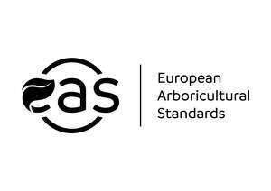

Trade Mark Journal No.2025/037 12 September 2025
UK00004247464 11 August 2025 (16,35,41,44)

European
- Class 16
- Periodicals; Trade journals; Magazines [periodicals]; Books; Printed matter; Paper crafts materials; Wrapping materials made of paper; Stationery; Bookbinding material; Printing type; Printing blocks; Paper sheets [stationery]; Note books; Jotters; Pamphlets; Bookbinding covers; Writing paper; Labels of paper or cardboard; Forms, printed; Date indicators; Cards; Pens [office requisites]; Coloured pens; Pencils; Leaflets; Stamps [seals]; Photographs [printed]; Posters; Printed educational materials; Printed teaching activity guides; .
- Class 35
- Financial marketing; Advertising; Commercial or industrial management assistance; Planning of marketing strategies; Price analysis services; Commercial intermediation services; Mediation of contracts for purchase and sale of products; Procurement of contracts for others relating to the sale of goods; Computerized file management; Online advertisements; Marketing; Internet marketing; Business marketing consultancy; Advertising in periodicals, brochures and newspapers; Distribution of promotional matter; Book-keeping; Clerical employment agency services; Business partnership search; Compilation of information into computer databases; Word processing; Provision of business and commercial information; Publication of publicity materials; Business advice relating to marketing; Business research; Provision of advertising space; Business management; Business administration; Promotion [advertising] of business; Mediation of advertising; Providing information about commercial business and commercial information via the global computer network; Business analysis and information services, and market research; Organisation of exhibitions and events for commercial or advertising purposes; Advertisement for others on the Internet; Publicity columns preparation; Writing of publicity texts; Publication of publicity materials and texts; Computerized on-line ordering services; Online ordering services; Advertising and marketing services provided by means of blogging; Providing business information in the field of social media; Providing marketing consulting in the field of social media; Data processing; Commercial lobbying services; Business strategy services; Merchandising; Product marketing; Sales promotion; Promotional marketing; .
- Class 41
- Electronic publishing services; Publication of educational teaching materials; Production of sound and image recordings on sound and image carriers; Publication of books; Lending library services for e-books; Book club services providing information relating to books; Information services relating to books; Publication of magazines; Teaching; Publication and editing of printed matter; Lending of books and periodicals; Production of radio and television programmes; Publishing services; Organization of exhibitions for cultural or educational purposes; Arranging and conducting of seminars; Arranging of workshops and seminars; Creation [writing] of podcasts; Publication of electronic magazines; Provision of entertainment via podcast; Organisation of Webinars; Education and instruction services; Education, entertainment and sport services; Provision of training and education; Provision of educational information; Publishing, reporting, and writing of texts; Consultancy and information services relating to arranging, conducting and organisation of congresses; Consultancy and information services relating to arranging, conducting and organisation of conferences; Arranging and conducting conferences and seminars; Arranging and conducting of seminars and workshops; Academies [education]; Team building (education); Consultation services relating to business education; Consultancy and information services relating to arranging, conducting and organisation of workshops; Consultancy services relating to the development of training courses; Personal development courses; Coaching in economic and management matters; Coaching relating to finance; Political speech writing; .
- Class 44
- Agriculture, aquaculture, horticulture and forestry services; Horticulture, gardening and landscaping; Tree surgery; Tree planting; Consultancy relating to tree planting; Consultancy and advisory services relating to agriculture, horticulture and forestry; Advisory and consultancy services relating to weed, pest and vermin control in agriculture, horticulture and forestry; Advisory and consultancy services relating to the use of fertilizers in agriculture, horticulture and forestry; Advisory and consultancy services relating to the use of manure in agriculture, horticulture and forestry; Consultancy relating to agriculture, horticulture and forestry; Providing online information about agriculture, horticulture, and forestry services; .
European Arboricultural Council - EAC
Representative: AYRLEGALS